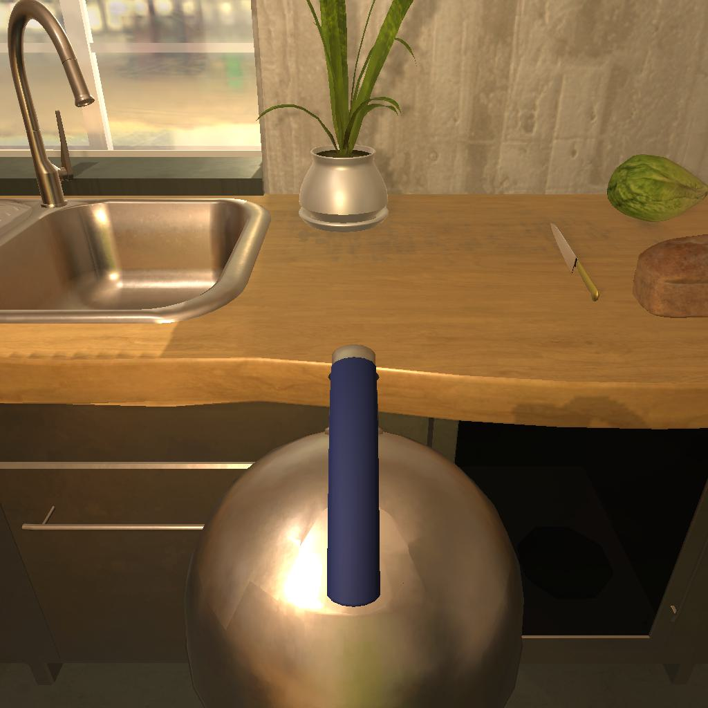
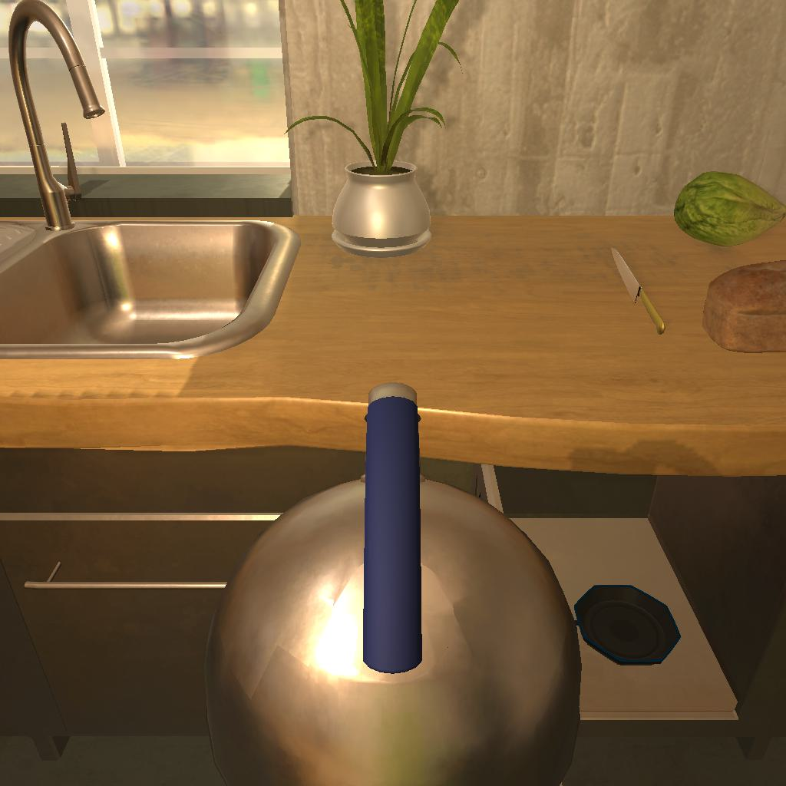

---------------------------------------------------------task: 26---------------------------------------------------------
--------------------------------------------------------------------------------------------------------------------------------------------------------------------
--------------------------------------------------------------------------------------------------------------------------------------------------------------------
Step:--------------------------------------------------------------------------18-------------------------------------------------------------------------------
----------------------------------------
VLM Prompt:
Image1:
Image2:
**Instruction**
1. Analyze the provided images to identify all visible household objects and compare the difference between images (e.h. whether the object is opened or not and taken on hand or not), focusing on those relevant to the task description "find two kettle and put them in cabinet."
2. Use the analysis of images and the task hint "The agent must find an object of the desired type, pick it up, find the correct location to place it, put it down there, then look for another object of the desired type, pick it up, return to previous location, and put it down there with the other object." to answer the question: what is the most reasonable action in the choices for the task description "find two kettle and put them in cabinet"?
3. Decide and write the answer using the template: The answer is: (i): , where i is the real number. If there is no desired object in images, search every place based on **Initial Observation** to find the object. And if no one is exactly correct, choose a similar answer.
**Initial Observation**
You are in the middle of a room. Looking quickly around you, you can see countertop (1), coffeemachine (1), cabinet (1-4), drawer (1-8), sink (1), sinkbasin (1), garbagecan (1), fridge (1), microwave (1), dresser (1), sidetable (1)
**Answer Choices**
(1): go to countertop 1
(2): go to coffeemachine 1
(3): go to cabinet 1
(4): go to drawer 1
(5): go to sink 1
(6): go to sinkbasin 1
(7): go to cabinet 3
(8): go to garbagecan 1
(9): go to cabinet 4
(10): go to drawer 2
(11): go to fridge 1
(12): go to microwave 1
(13): go to dresser 1
(14): go to sidetable 1
(15): go to drawer 3
(16): go to drawer 4
(17): go to drawer 5
(18): go to drawer 6
(19): go to drawer 7
(20): go to drawer 8
(21): close cabinet 2
(22): put kettle 1 in/on cabinet 2
(23): examine kettle 1
(24): examine cabinet 2
**Answer**
Let's think step by step by following the instructions.
----------------------------------------
----------------------------------------
Original Response:
First, we analyze the provided images to identify all visible household objects. In both images, we can see a sink, countertop, drawers, and a cabinet with no visible kettle. The difference between the images is that drawer 6 is open in Image1 and closed in Image2, but there's no kettle inside it, as seen in Image2.
Based on the task description "find two kettle and put them in cabinet," and the initial observation which mentions the locations of various objects but does not specify where the kettles are, we can infer that the kettles are not visible in the provided images.
Considering the task hint, we must first find a kettle, pick it up, and then place it in a cabinet. Since the kettles are not visible, we need to search every place based on the initial observation to find the object.
Given that the most common places to find a kettle would be near the sink, on the countertop, or in a cabinet or drawer, we should prioritize those locations. However, since the countertop and sink are visible and there's no kettle, we should check the cabinets and drawers next.
The answer is: (3): go to cabinet 1.
----------------------------------------
----------------------------------------
>>> Refine Original VLM Response and Get Pure Action: go to cabinet 1
----------------------------------------
-----------------------------------------------------------------
Running time: 35.029733419418335 seconds
Total Money: 13.76924
-----------------------------------------------------------------
-----------------------------------------------------------------
Text Observation:You arrive at loc 2. The cabinet 1 is open. On the cabinet 1, you see a plate 1, a mug 1, a dishsponge 1, and a tomato 1.
-----------------------------------------------------------------
UNSUCCEED